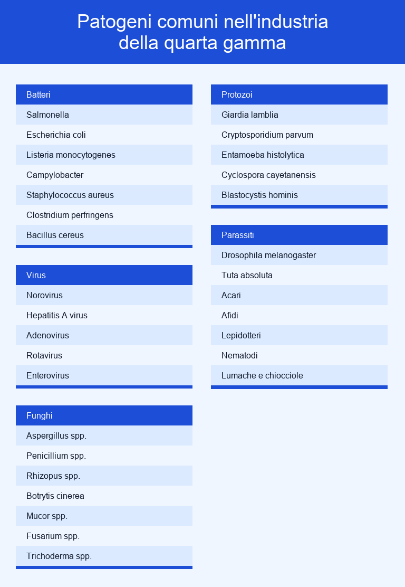

L'ozono (O3) è un gas che viene utilizzato nell'industria della quarta gamma per applicazioni come sanificazione dell'acqua, disinfezione dell'aria e lavaggio dei prodotti.
Viene impiegato in diverse fasi della filiera di questa industria, dalla fase di raccolta alla fase di vendita al dettaglio, ed è in grado di eliminare diversi patogeni come Salmonella, Escherichia coli e Listeria monocytogenes.
Inoltre, è in grado di portare diversi benefici come allungamento della vita utile, miglioramento della sicurezza alimentare e miglioramento della qualità degli alimenti. Però, può anche influire negativamente sulla qualità dei prodotti se usato scorrettamente.
In questo articolo vengono descritte nel dettaglio le applicazioni dell'ozno nell'industria della quarta gamma e quali sono i benefici che questo gas porta in questa industria.
L'ozono attacca e ossida le pareti cellulari dei batteri e dei virus. Ciò provoca danni strutturali alle membrane cellulari, compromettendo l'integrità e la funzionalità dei microorganismi. Inoltre, può anche danneggiare il materiale genetico (DNA o RNA) all'interno dei batteri e dei virus, impedendo loro di replicarsi e causando la loro morte.
Dopo il trattamento con ozono, i batteri e i virus diventano inattivi e non rappresentano più una minaccia per la sicurezza alimentare.
La presenza di batteri patogeni come Salmonella, Escherichia coli (E. coli) e Listeria sui prodotti della quarta gamma può causare malattie alimentari gravi o addirittura letali se consumati da persone. In aggiunta, la crescita batterica e la contaminazione virale possono accelerare la decomposizione e il deperimento dei prodotti, riducendo la loro durata di conservazione e causando sprechi.
Questi microrganismi possono anche influenzare negativamente il sapore, l'odore e la consistenza dei prodotti alimentari, riducendone la qualità organolettica. Oltretutto, queste contaminazioni possono portare a richiami di prodotti, causando notevoli perdite economiche per le aziende del settore della quarta gamma. Questi ritiri possono danneggiare gravemente la reputazione di un'azienda e minare la fiducia dei consumatori.
L'ozono è efficace contro una vasta gamma di specie di muffe, tra cui Aspergillus, Penicillium e Alternaria, che sono comuni contaminanti dei prodotti della quarta gamma. Questo gas attacca le membrane cellulari delle muffe, compromettendo la loro integrità e portando alla morte delle cellule micotiche.
Le muffe sono un problema per i prodotti della quarta gamma perché causano la loro degradazione. Questo include la decomposizione dei prodotti, la formazione di macchie, la perdita di consistenza e l'alterazione del sapore. Questi cambiamenti compromettono la qualità dei prodotti, rendendoli meno appetibili per i consumatori.
Alcune muffe producono micotossine, che possono essere dannose per la salute umana se ingerite in quantità significative. Inoltre, la crescita delle muffe sui prodotti della quarta gamma spesso porta a sprechi e perdite. Infatti, i prodotti contaminati devono essere scartati, causando una perdita economica per i produttori.
Le muffe accelerano la degradazione dei prodotti, riducendo la loro durata di conservazione. Questo significa che questi prodotti hanno una vita utile più breve, il che può comportare la necessità di rifornire più frequentemente i punti vendita e aumentare i costi di produzione e distribuzione.
Di conseguenza, le aziende devono investire in misure di controllo e prevenzione delle muffe, come l'uso di conservanti chimici o l'impiego di sistemi di conservazione speciale. Questi costi aggiuntivi influiscono sui margini di profitto.
L'ozono è efficace nel neutralizzare odori di decomposizione che possono verificarsi su prodotti freschi come frutta e verdura. Inoltre, riduce anche l'odore dei prodotti aromatici o di quelli speziati che può diffondersi e influenzare negativamente il sapore di altri prodotti.
Questo gas è in grado di eliminare gli odori entro pochi minuti se il sistema di sanificazione è adeguatamente progettato. L'efficienza nell'eliminare gli odori varia a seconda del tipo di odore e della concentrazione di ozono utilizzata. In alcuni casi, è possibile ottenere una riduzione degli odori del 99%.
I prodotti della quarta gamma devono avere una shelf-life abbastanza lunga per garantire la distribuzione e la vendita su vasta scala. Gli odori indesiderati possono accelerare la degradazione del prodotto, riducendo la sua vita utile. Inoltre, poiché i prodotti della quarta gamma spesso attraversano lunghe catene di approvvigionamento, ci sono più opportunità per l'assorbimento di odori esterni durante il trasporto e la manipolazione, aumentando il rischio di contaminazione degli odori.
A questo, si aggiunge il fatto che molte verdure e frutta confezionate sono particolarmente suscettibili all'assorbimento degli odori a causa della loro porosità e della natura delicata. Ad esempio, l'aglio, la cipolla o altri alimenti odorosi possono facilmente influenzare i prodotti vicini.
Purtroppo però, i consumatori delle quarta gamma sono solitamente alla ricerca di prodotti freschi e di alta qualità. Di conseguenza, eventuali odori indesiderati possono influenzare negativamente la percezione della freschezza e della qualità del prodotto, portando i consumatori a scegliere altri tipi di prodotto.
L'ozono allunga la durata dei prodotti della quarta gamma riduce significativamente il rischio di deterioramento dovuto all'attività microbica, eliminando più del 99% dei batteri, virus e muffe presenti sulla superficie dei prodotti alimentari. Inoltre, è in grado di ossidare composti organici volatili (COV), come aldeidi e chetoni, che contribuiscono agli odori sgradevoli e alla decomposizione dei prodotti.
La vita utile di questi prodotti può essere estesa di diversi giorni o addirittura settimane, a seconda del tipo di prodotto e delle condizioni di conservazione. Ad esempio, studi condotti su fragole hanno dimostrato un prolungamento della vita utile di oltre 7 giorni utilizzando questo gas.
La conservazione prolungata dei prodotti della quarta gamma contribuisce a ridurre gli sprechi alimentari, un problema significativo a livello globale. Infatti, secondo un rapporto del Food and Agriculture Organization (FAO) delle Nazioni Unite, la stima delle perdite alimentari post-raccolta nel mondo ammontano al 14% della produzione agricola totale.
Va anche detto che le aziende che possono garantire una maggiore durata di conservazione dei loro prodotti hanno un vantaggio competitivo. Infatti, una conservazione più lunga si traduce in un aumento delle vendite e quindi dei profitti, nonchè in una riduzione degli sprechi di prodotti e quindi dei costi operativi.
L'ozono riduce la dipendenza dai prodotti chimici antimicrobici tradizionali, come il cloro, l'acido citrico e il perossido di idrogeno, per garantire la sicurezza alimentare.
Visto che questo gas è una forma di ossigeno, ritorna all'atmosfera sotto forma di ossigeno molecolare (O2) quando si decompone, senza lasciare residui dannosi. Questo contribuisce a ridurre l'impatto ambientale rispetto all'uso di agenti chimici che possono generare scarti tossici. Inoltre, poiché non lascia residui dannosi, non è necessario gestire i rifiuti chimici, il che può comportare notevoli risparmi nei costi di smaltimento.
Va notato anche che alcuni organismi possono sviluppare resistenza agli agenti chimici utilizzati per il controllo delle malattie e dei parassiti, rendendo necessario l'uso di dosi sempre maggiori di tali prodotti. Queste dosi sempre maggiori causano problemi per gli operatori che manipolano agenti chimici, i quali devono seguire procedure sempre più rigorose per garantire la loro sicurezza. Purtroppo però, Secondo l'Organizzazione Mondiale della Sanità (OMS), si stima che ogni anno ci siano 1 milione di casi di intossicazione acuta causati dall'uso improprio di prodotti chimici, con oltre 20.000 decessi correlati.
Infine, va detto che l'acquisto di agenti chimici, insieme alle spese per la loro applicazione e la gestione dei residui, può rappresentare una significativa parte dei costi di produzione nel settore della quarta gamma.
L'ozono può scomporre i residui di pesticidi presenti sulla superficie dei prodotti, compresi gli insetticidi, gli erbicidi e i fungicidi. Questo processo di degradazione chimica è molto efficace nel ridurre i residui di pesticidi a livelli sicuri per il consumo.
Studi scientifici hanno dimostrato l'efficacia dell'ozono nel ridurre i residui di pesticidi sui prodotti. Ad esempio, ricerche condotte su diverse colture hanno rilevato riduzioni significative, spesso superiori al 90%, anche se variabili a seconda del tipo di pesticida e del tempo di esposizione.
Secondo dati dell'Environmental Working Group (EWG) negli Stati Uniti, il 70% dei campioni di prodotti freschi testati contiene residui di pesticidi. Questi residui possono persistere anche dopo il lavaggio dei prodotti. L'esposizione ai pesticidi può causare problemi di salute come avvelenamento acuto, ma può anche essere associata a gravi malattie croniche, tra cui il cancro, i disturbi del sistema endocrino e problemi neurologici.
L'uso eccessivo di pesticidi può portare anche alla resistenza dei parassiti. Ciò significa che i parassiti diventano meno sensibili ai pesticidi, il che richiede dosi sempre più elevate o l'uso di pesticidi più potenti, con conseguenti costi maggiori e problemi ambientali. Per questo, l'industria della quarta gamma sta sempre più cercando di passare a pratiche agricole sostenibili, riducendo l'uso di pesticidi chimici e favorendo l'agricoltura biologica o altre tecniche alternative (ozono).
Molti paesi, infatti, stabiliscono limiti massimi di residui (LMR) di pesticidi sui prodotti alimentari per garantire la sicurezza amentare.
L'ozono può rimuovere le cariche microbiologiche, compresi batteri patogeni come E. coli e Salmonella, dalle acque reflue, i quali possono rappresentare una minaccia per la sicurezza alimentare se non trattati correttamente. Inoltre, elimina efficacemente anche una vasta gamma di inquinanti organici, pesticidi e contaminanti microbiologici.
L'industria della quarta gamma richiede notevoli quantità di acqua per il lavaggio e il raffreddamento dei prodotti. Questo consumo di acqua può esaurire le risorse idriche locali e contribuire allo stress idrico in alcune aree, per cui è indispensabile utilizzare sistemi di sanificazione (ozono) e di filtrazione per ridurre lo spreco d'acqua e riutilizzarla il più possibile.
Per quanto riguara lo smaltimento di queste acque, va detto che le acque reflue non adeguatamente trattate possono avere un impatto negativo sull'ambiente circostante. Infatti, possono contaminare fiumi, laghi e terreni agricoli, danneggiando gli ecosistemi locali. Quindi, per affrontare questi problemi, ci sono normative sempre più stringenti che richiedono alle aziende del settore della quarta gamma di monitorare e trattare le loro acque reflue in modo adeguato. Il mancato rispetto di queste normative può comportare multe e sanzioni.
Purtroppo, questo il trattamento di queste acque può essere costoso, specimente se è necessario rimuovere contaminanti chimici o microbiologici. Spesso, le aziende del settore devono affrontare costi significativi per mantenere le loro operazioni in conformità con le normative ambientali se utilizzano sistemi di sanificazione tradizionali.
L'ozono viene utilizzato con successo nella maggior parte delle fasi della filiera della quarta gamma, dalla fase di raccolta alla fase di vendita al dettaglio.
Ecco elencate brevemente le varie fasi della filiera in cui viene usato.
La seguente illustrazione riassume le fasi della filiera nell'idustria della quarta gamma dove l'ozono viene usato.
L'ozono elimina i batteri patogeni più comuni nell'industria della quarta gamma, come Salmonella, Escherichia coli e Listeria monocytogenes.
Elimina ance i virus (come Norovirus, Hepatitis A virus e Adenovirus), i funghi (come Aspergillus spp., Penicillium spp. e Rhizopus spp.) e i protozoi (Giardia lamblia, Cryptosporidium parvum e Entamoeba histolytica).
Infine, repelle diversi tipi di insetti e parassiti (come Drosophila melanogaster, Tuta absoluta e Acari).
La seguente immagine mostra un elenco dei patogeni più comuni in questa industria.

A seguire, viene data una breve descrizione di ogni singolo patogeno. I patogeni sono divisi per categorie, quali batteri, virus, fungi, protozoi e parassiti.
Ecco una descrizione dei batteri più comuni in questa industria.
Ecco una descrizione dei virus più comuni in questa industria.
Ecco una descrizione dei funghi più comuni in questa industria.
Ecco una descrizione dei protozoi più comuni in questa industria.
Ecco una descrizione dei parassiti più comuni in questa industria.
L'ozono porta diversi benefici all'industria della quarta gamma, come allungamento della vita utile, miglioramento della sicurezza alimentare e miglioramento della qualità degli alimenti.
Qui sotto trovi una lista dei principali benefici che l'ozono porta all'industria della quarta gamma.
La seguente illustrazione riassume i benefici che l'ozono porta a questa idustria.
L'ozono può avere effetti negativi sulla qualità dei prodotti nell'industria della quarta gamma se usato in quantità eccessiva o per un tempo di esposizione prolungato, come alterazione del sapore e dell'odore, degrado dei nutrienti e cambiamenti nella texture.
Si consiglia quindi di contattare un professionista prima di applicare questa tecnologia di sanificazione.
Ecco elencati brevemente i potenziali effetti negativi dell'ozono sulla qualità dei prodotti della quarta gamma.
La seguente illustrazione riassume gli effetti collaterali che l'ozono può avere sulla qualità dei prodotti di questa idustria.